冬至
冬至
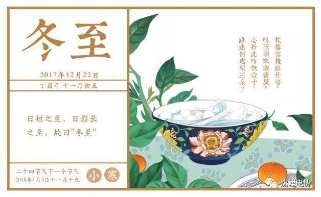
冬至将至，冬至吃什么？让我们一起看看各地的冬至之食。
1、汤圆
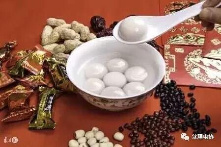

冬至吃汤圆，是我国的传统习俗，在江南尤为盛行。民间有“吃了汤圆大一岁”之说。汤圆也称汤团，冬至吃汤团又叫“冬至团”。南北各地还有不少汤圆的名品，如宁波汤圆馅多皮薄，糯而不粘;长沙姐妹汤圆洁白晶莹，香甜可口;如今不仅冬至吃，一年四季都能吃到汤圆。
2、年糕
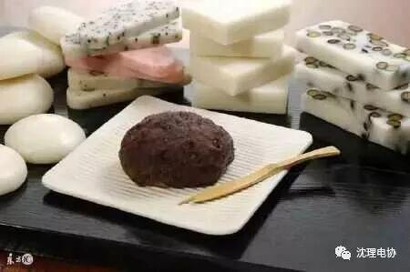

吃年糕从清末民初直到现在杭州人在冬至都喜吃年糕。在每逢冬至做三餐不同风味的年糕，早上吃的是芝麻粉拌白糖的年糕，中午是油墩儿菜、冬笋、肉丝炒年糕，晚餐是雪里蕻、肉丝、笋丝汤年糕。冬至吃年糕，年年长高，图个吉利。
3、桂圆烧蛋
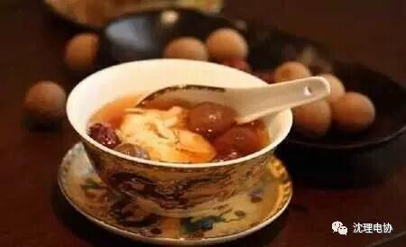

嘉兴土生土长的人，大多选择吃桂圆烧蛋过冬至夜，“把买来的桂圆剥好，然后放在水里煮，把桂圆的汁水煮出来，再打入鸡蛋，根据自己的口味加糖……”一位嘉兴老人说：“以前人们的生活条件不大好，冬至夜吃上一碗热腾腾的桂圆烧蛋，自个儿心里就感觉整个冬天都不冷了。”另外，在嘉兴平湖还有冬至夜吃赤豆糯米饭的习俗。
4、肉豆腐
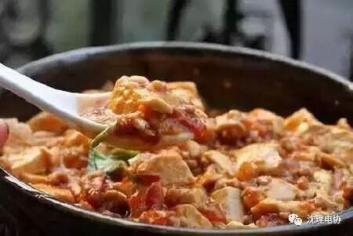

衢州有一句俗话，说冬至‘有得吃，吃一夜，没得吃，冻一夜’，衢州过冬至的饮食同样是十分讲究的。”曾在衢州文化部门工作的楼老师说，在衢州的老习俗里，每到冬至，每家每户的菜肴里必须要有肉和豆腐，同时各家都炒上一些花生、玉米、大豆等，用于冬至夜里的闲食使用。
5、烧腊
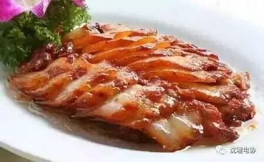

冬至这天，大多数广东人都有“加菜”吃冬至肉的风俗。其中，烧腊就是广东人冬至餐桌上必不可少的传统食品。全家人在祭祖之余，准备一些腊肉腊肠吃一顿，以祈求来年能鸿运当头。
6、冬节丸

潮汕有“冬节丸，一食就过年”的民谚，俗称“添岁”，表示年虽还没有过，但大家已加了一岁。孩子们最盼吃这碗甜丸，往往夜里醒来都要问天亮了吗?然而天好像要与孩子们开玩笑似的，老是不亮，故潮俗有“冬节夜，啰啰长，甜丸未煮天唔光”的童谣。
7、酿酒
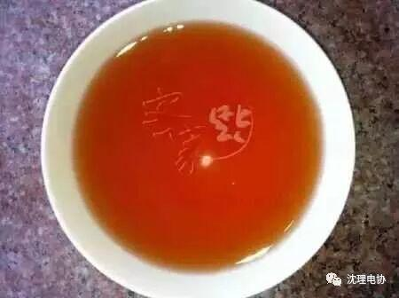
客家人认为，冬至时的水味最醇，用它酿的酒可久藏不坏，柔和爽口，回甜生津，后劲颇足。所以，客家人冬至酿酒已成为习俗。为了这一天，客家主妇常挑个吉祥的日子，专门到集市添置酿酒的器具，把陈年的酒坛搬到溪流中，用黄黄的细沙洗去污物，再让清凉的泉水反复冲洗，最后置放在阴凉处风干。
8、羊肉汤
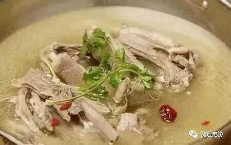

在四川却是冬至吃羊肉汤，羊肉是冬日可谓冬日滋补之首，专家指出，吃羊肉既能御风寒，又可补身体，对一般风寒咳嗽、慢性气管炎、虚寒哮喘、肾亏阳痿、腹部冷痛、体虚怕冷、腰膝酸软、面黄肌瘦、气血两亏、病后。
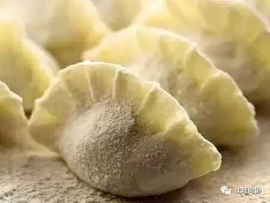

吃“捏冻耳朵”是冬至河南人吃饺子的俗称。缘何有这种食俗呢?每逢冬至人们便模仿做着吃，是故形成“捏冻耳朵”此种习俗。以后人们称它为“饺子”，也有的称它为“扁食”和“烫面饺”，人们还纷纷传说吃了冬至的饺子不冻人。
10、姜母鸭
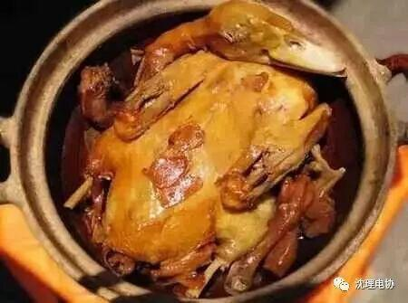

厦门人冬至吃姜母鸭。姜母鸭以红面番鸭为原料，用芝麻油将鸭肉炒香后，再加入老姜(姜母)及米酒等炖煮而成。姜母鸭自家做的比较少，因此，冬至一到，就有很多人开始排队买姜母鸭。
11、赤豆糯米饭
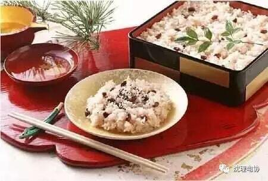
湖南湖北一带，在冬至那一天一定要吃上赤豆糯米饭。糯米味甘、性温，能够补养人体正气，吃了后会周身发热，起到御寒、滋补的作用，最适合在冬天食用。若是能用上黑糯米，那就更好了，黑糯米有助于产妇滋补产后造成的身体虚弱，有利于增加乳汁，哺乳婴儿。相传，有一位叫共工氏的人，他的儿子不成才，作恶多端，死于冬至这一天，死后变成疫鬼，继续残害百姓。但是，这个疫鬼最怕赤豆，于是，人们就在冬至这一天煮吃赤豆饭，用以驱避疫鬼，防灾祛病。
12、饺子
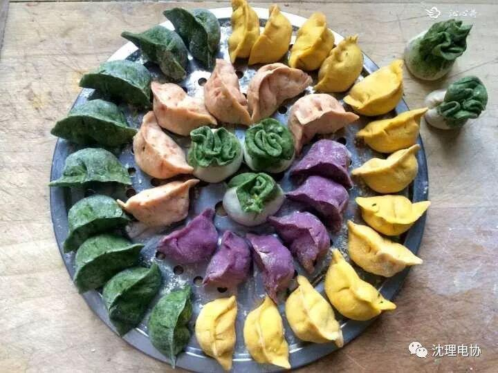
在我国北方有“冬至饺子夏至面”的说法，为何冬至这一天要吃饺子呢？饺子原名“娇耳”，相传是我国医圣张仲景发明的，距今已有一千八百多年的历史了。
东汉末年，名医张仲景见很多穷苦百姓忍饥受寒，耳朵都冻烂了，于是发明了“祛寒娇耳汤”，其做法是用羊肉、辣椒和一些祛寒药材在锅里煮熬，煮好后再把这些东西捞出来切碎，用面皮包成耳朵状的“娇耳”，下锅煮熟后分给病人，每人两只娇耳，一碗汤。人们吃下祛寒汤后浑身发热，血液通畅，两耳变暖，一段时间病人的烂耳朵就好了。
张仲景舍药一直持续到大年三十。大年出一，人们庆祝新年，也庆祝烂耳康复，就仿娇耳的样子做成食物，并称之为“饺耳”、“饺子”。此后，“祛寒娇耳汤”的故事一直在民间广为流传。每逢冬至和大年初一，人们吃着饺子，心里仍记挂着张仲景的恩情。所以，现在又有“冬至吃饺子一冬不会冻耳朵”的说法。
13、头脑
14、冬至肉
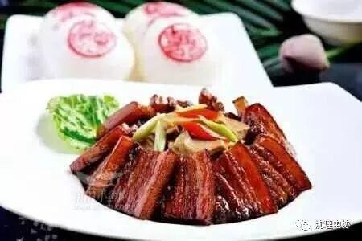

对广东人来说，冬至是一个十分重要的节日，甚至比春节还重要得多，所以，广东人有句话叫“冬至大过年”。
据介绍，冬至这天，大多数广东人都有“加菜”吃冬至肉的风俗。其中，烧腊就是广东人冬至餐桌上必不可少的传统食品。全家人在祭祖之余，准备一桌大鱼大肉、腊肉腊肠，谈笑风生地吃一顿，以祈求来年能鸿运当头，大吉大利。有些广东人还有在冬至这天向亲朋好友送腊肉的习俗。为此，各家超市精心设置了红红火火的腊味坊，里面挂满了各式各样的腊肉、腊肠、腊鸭、火腿、咸肉、熏肉等，不仅有散装的，还有袋装的，让市民各取所需。为了吸引市民购买，有的超市还派出工作人员，在超市外面摆起腊味品摊档，向过路的市民销售腊肉制品。
好了，冬至好好享受家乡的美味吧！
编辑 张诗梦